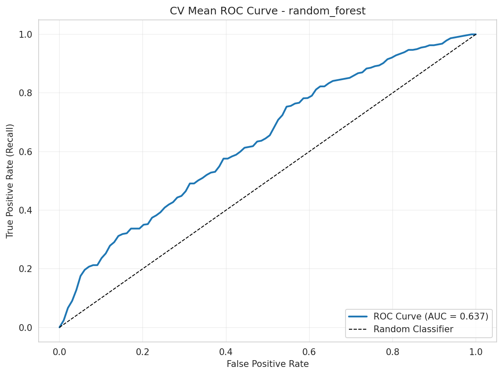
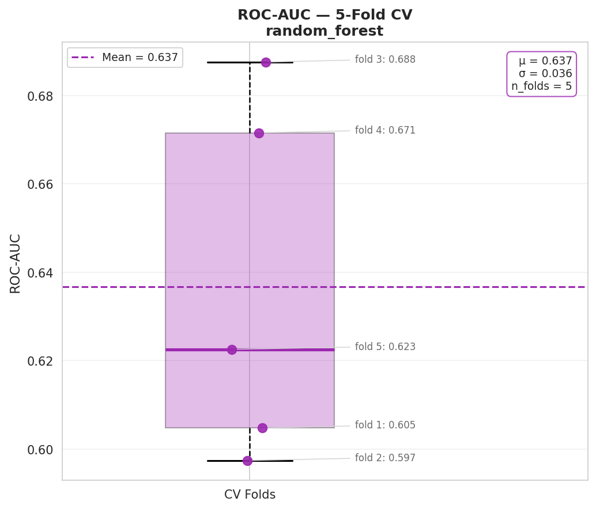

Análisis de capacidad discriminativa del modelo (CV)
| Métrica | Valor |
|---|---|
| ROC-AUC (CV Mean) | 0.6367 |
| ROC-AUC (Test) | 0.6404 |
| Std Dev (CV) | 0.0362 |


ROC-AUC 0.6367 (CV) indica capacidad discriminativa moderada, mejor que azar (0.5). Estabilidad cross-validation: std 0.0362. Folds: 0.6048, 0.5974, 0.6875, 0.6715, 0.6226. Consistente entre particiones.